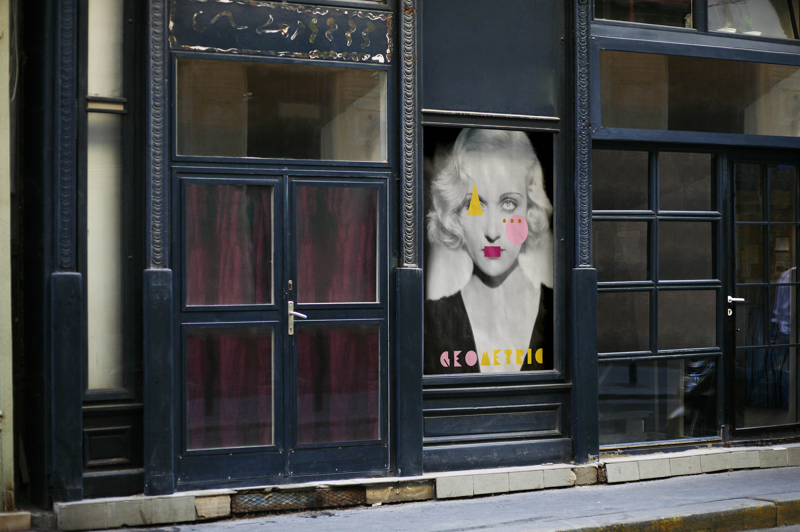
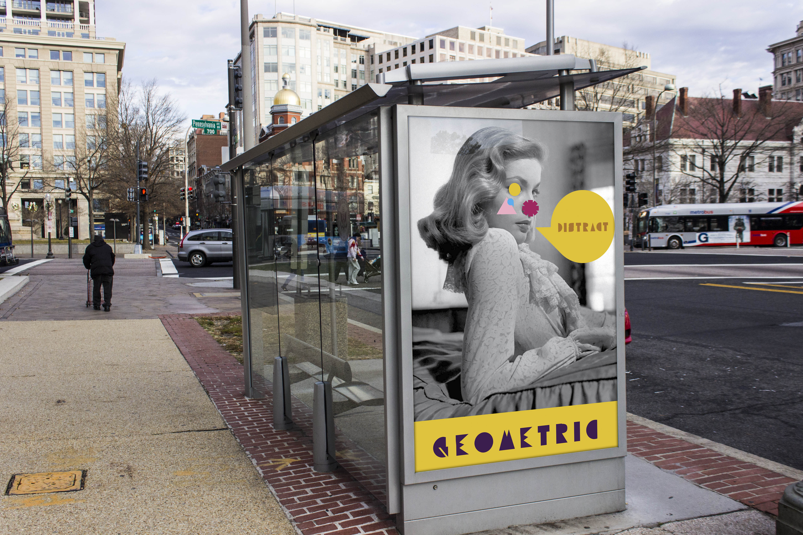
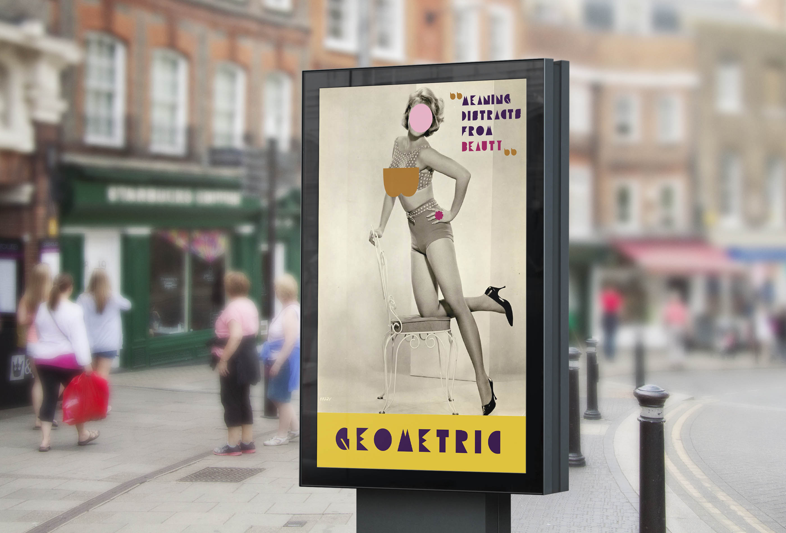
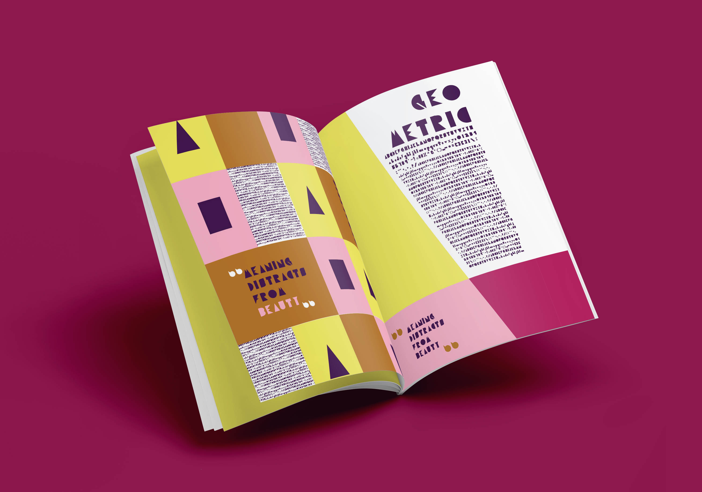
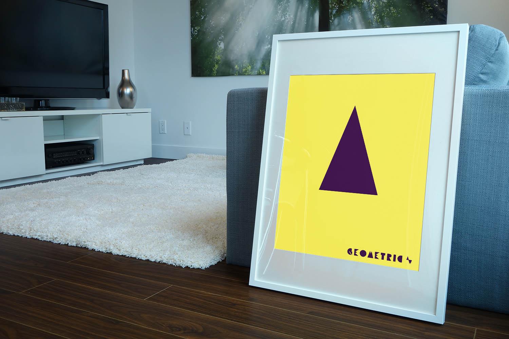
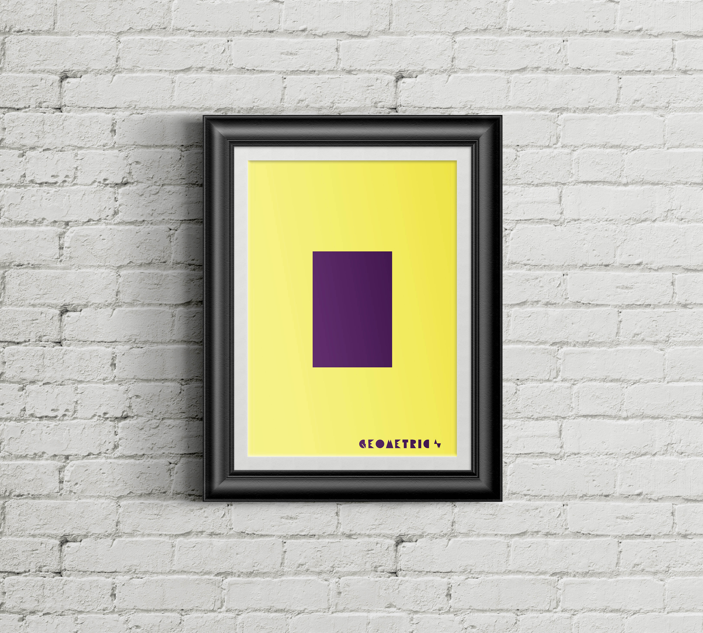

Geometric Font
Geometric is a font I designed Junior year. This project expanded my personal brand, drawing inspiration from the sharp forms in my logo and expanding them into a typeface. The typeface includes uppercase, lowercase, numbers, and 50 other characters. Along with my typeface, I created two support pieces: two posters showing my typeface as forms interacting with the imagery as well as a magazine designed to show all the characters I created in the typeface as well as the visuals associated with the font.





